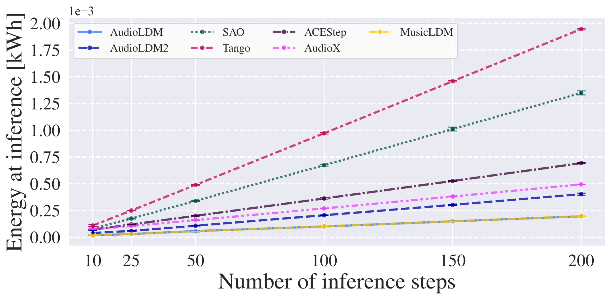
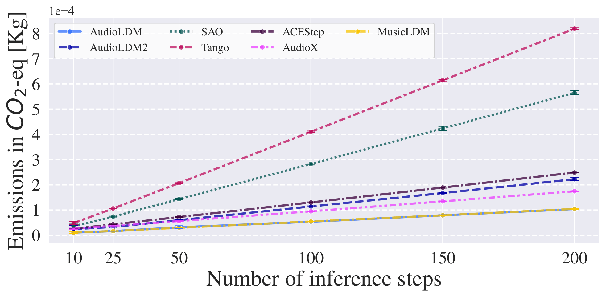
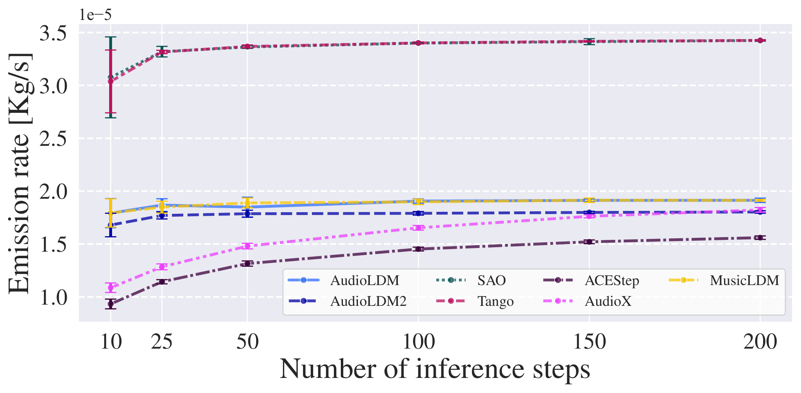
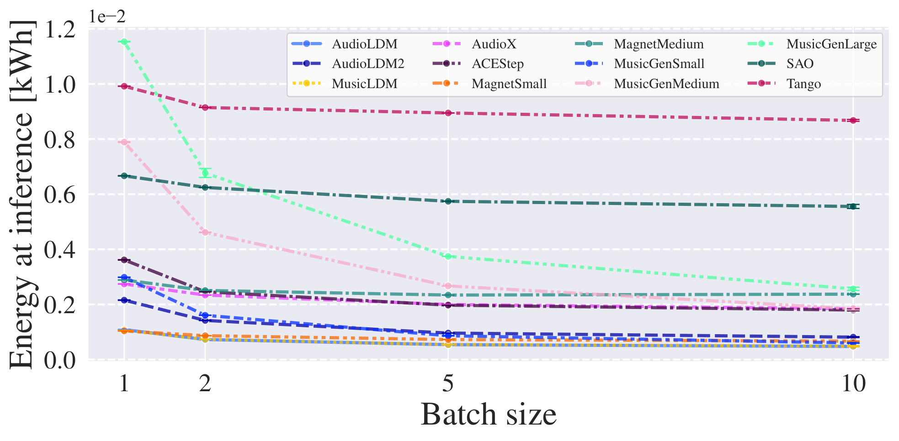
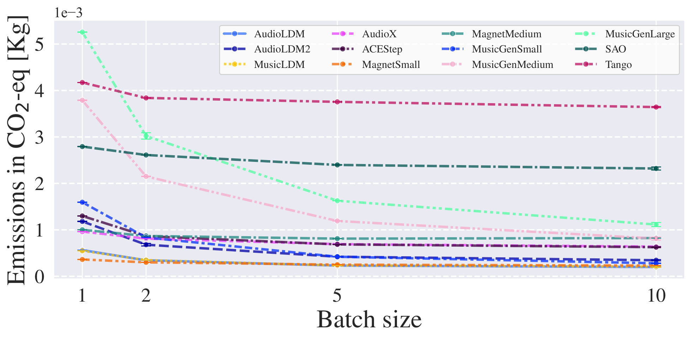
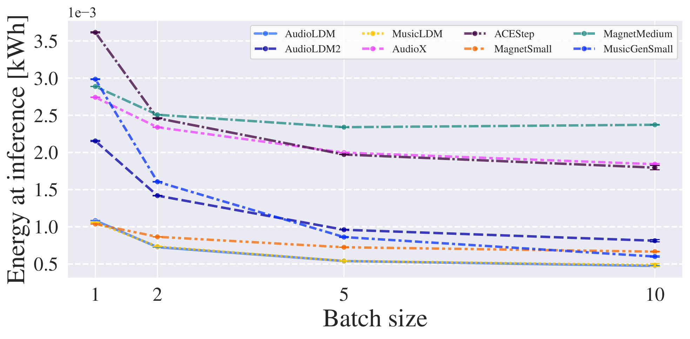
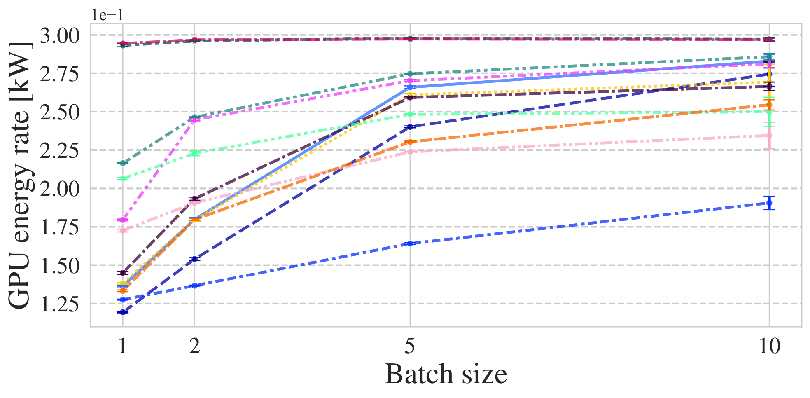

Experiments
Varying Inference Step Number




Varying Inference Batch Size




Quality Metrics Analysis
This experiment was performed on randomly selected audio and caption pairs from the MusicCaps and SongDescriber datasets. Pareto-efficient configurations are highlighted in red.
MusicCaps Dataset
SongDescriber Dataset
Contrastive Language-Audio Pretraining (CLAP) Score
CLAP Score results have been obtained with the stable-audio-metrics toolkit (higher is better).
Audiobox Metrics
The following metrics were computed with the audiobox-aesthetics library (higher is better):
CE — Content Enjoyment (subjective quality of audio)
CU — Content Usefulness (suitability for content production)
PC — Production Complexity (number of audio elements)
PQ — Production Quality (evaluates technical properties)